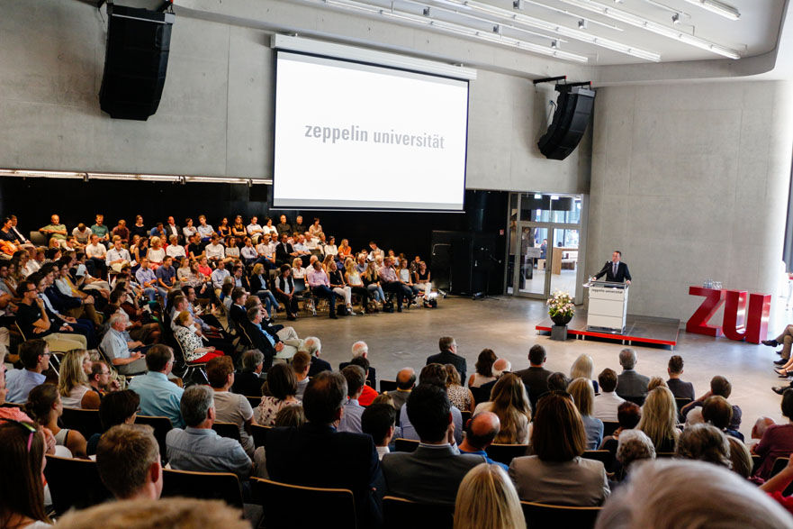

Our partners

Transcultural Leadership Summit is a concept designed for the development of industry-wide solutions and intellectual exchange of highly qualified people. Its goals are the attendees’ deepened cultural knowledge and understanding achieved by annually changing country focus and a bringing together of different cultures in order to understand global connectivity and share experience. On October 14th/15th 200 participants will have the possibility to attend the Transcultural Leadership Summit. The two conference days will include keynotes by internationally recognized guest speakers and different workshop formats, which – with an annually changing country focus – deal with and further develop up-to-date topics in science and praxis. This year the country in focus will be China.
Caused by the formation of global networks with growing connectivity we are confronted with higher complexity in international matters as one of the major challenges of globalization. This ever growing complexity and its implications for the organization as well as for the individual are very real challenges that we must address today. Although connectivity increases, it often leads to a counterintuitive alienation. Newly evolving industries, global nomadism and enlarged communication spaces are only a few developments that demand for alternative and innovative approaches to global matters.
Its goal is the development of a hub within which global change succeeds to both widen and focus global communication and action spaces. The area of lake Constance located between Austria, Switzerland and Germany which is coined by a diverse group of people and a firm landscape, shaped by firms which are equally affected by the consequences and challenges of globalization poses the perfect venue for the summit. With these set goals TLS becomes part of the Transcultural Caravan - a project initiated by Zeppelin University Leadership Excellence Institute. The Transcultural Caravan is a hub of global thinking on a new type of leadership and the capacity to cooperate as well as to define globally shared values: http://transcultural-caravan.org.
The concept of transculturality can be applied as the basis for a forum in which global matters and questions (e.g. Sustainability, Decarbonisation, Management of global firms, economic stability, etc.) are discussed on the basis of similarities, the capacity to cooperate and the capacity to define globally shared values rather than differences and diverging opinions.
The two conference days will include keynotes by internationally recognized guest speakers and different workshop formats. This year the country in focus will be China. Not only with its interdisciplinary focus does TLS differ from other conferences. Workshop formats should be equally appealing for participants and speakers, for example in the realization of „coffee-talks“, multiple 20-minute impulse sessions with different more specific topics guided through by an expert in the field.
Within the past months China has been facing a major decrease in annual growth rates marking a watershed in the seemingly unlimited emerge of Chinese Economy. Looking at this shift in global context double-digit growth rates still account for an extraordinary development of the economy and the countries arising economic power. Up to now major guarantors of Chinese high speed development have been and a strong focus on large-scale investments and China taking up the role of the “world’s factory”.
For China the present change does come with both an increasing need for alternative solutions and opportunities to reshape their position in the world, which makes the country a fit and highly relevant country for this years Transcultural Leadership Summit. In 4 different panels economic, social, cultural and politic topics (e.g. Management Problems of global firms, Global Standards and Ethics, TTIP, One-Belt-One-Road, Confucian Entrepreneurship) will be discussed and framed by transdisciplinary panel discussions and keynotes ( e.g. Is there a need for redefinition of the term of leadership looking at the rise of countries that might not meet the requirements set in the definition at hand).
Located in the context of Zeppelin University which has been ranked among the best and most innovative universities in Germany for its approach “bridging business culture politics” the summits most unique assetbecomes clear.
We are convinced that our universities highest commitment to interdisciplinarity and thinking-out-of-the-box-attitude of the student body can be directly applied to a conference format and consequently benefit and enrich professional dialogue. In addition Zeppelin University incorporates the core competence of an excellent international network and reputation.